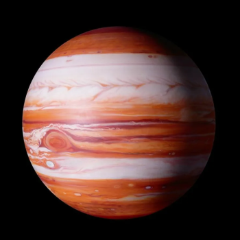
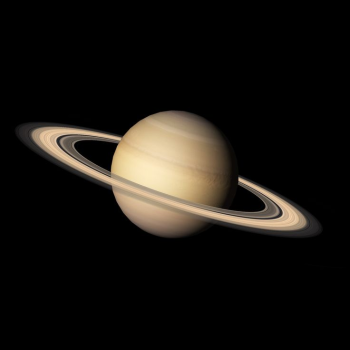
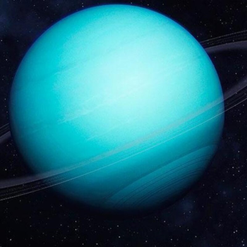

Планеты
Оглавление страницы
Меркурий — наименьшая планета Солнечной системы и самая близкая к Солнцу. Названа в честь древнеримского бога торговли — быстрого Меркурия, поскольку она движется по небу быстрее других планет.
Некоторые особенности Меркурия:
- Период обращения вокруг Солнца составляет всего 87,97 земных суток — самый короткий среди всех планет Солнечной системы.
- Видимое расстояние от Солнца, если смотреть с Земли, никогда не превышает 28°. Эта близость к Солнцу означает, что планету можно увидеть только в течение небольшого времени после захода или до восхода солнца, обычно в сумерках.
- Поверхность Меркурия покрыта ударными кратерами и внешне похожа на лунную.
- Атмосфера у планеты очень разрежённая.В ней содержится малая концентрация неона, аргона и водорода.
- Температура на поверхности меняется сильнее, чем на любой другой планете Солнечной системы.В экваториальных областях дневная температура составляет в среднем +427 °C, а ночью опускается до −173 °C. Полярные регионы погружены в постоянный холод: температура здесь не поднимается выше −93 °С.

Венера — вторая по удалённости от Солнца и шестая по размеру планета Солнечной системы.
Наряду с Меркурием, Землёй и Марсом принадлежит к семейству планет земной группы.
У Венеры нет естественных спутников.
Некоторые характеристики Венеры:
- Радиус: 6051,8 км (95% земного).
- Масса: 4,87⋅1024 кг (81,5% земной).
- Средняя плотность: 5,24 г/см³.
- Ускорение свободного падения: 8,87 м/с².
- Вторая космическая скорость: 10,36 км/с.

Земля — третья по удалённости от Солнца планета Солнечной системы.
Самая плотная, пятая по диаметру и массе среди всех планет Солнечной системы и крупнейшая среди планет земной группы, в которую входят также Меркурий, Венера и Марс.
Единственное известное человеку в настоящее время тело во Вселенной, населённое живыми организмами.
Некоторые характеристики Земли:
- масса — 5 973 600 000 000 000 000 000 000 кг;
- радиус — 6371 км;
- площадь поверхности — 510 млн км²;
- длина экватора — около 40 000 км;
- среднее расстояние от Солнца — около 150 млн км;
- период обращения вокруг Солнца — 365 дней;
- период вращения вокруг своей оси — 24 часа;
- число спутников — 1 (Луна).

Марс — четвёртая по удалённости от Солнца и седьмая по размеру планета Солнечной системы. Названа в честь Марса — древнеримского бога войны.
Некоторые характеристики Марса:
- Диаметр: 6 792 км, что составляет примерно половину диаметра Земли (12 742 км).
- Масса: 10,7% массы Земли.
- Атмосфера: сильно разрежена, давление на поверхности примерно в 160 раз меньше земного.
- Спутники: Фобос и Деймос (в переводе с древнегреческого — «страх» и «ужас»).
- Год на Марсе: длится 687 земных суток.
- Средняя температура: около 210 K (−63 °C), а суточный температурный диапазон варьируется от 184 K до 242 K (от −89 до −31 °C).
- Площадь поверхности: примерно равна размерам суши на Земле и составляет 144 млн км².

Юпитер — крупнейшая планета Солнечной системы, пятая по удалённости от Солнца.
Некоторые характеристики Юпитера:
- Радиус: 69 911 км.
- Масса: 1,8982×10^27 кг.
- Среднее расстояние до Земли: 778 млн км.
- Температура поверхности: −145 °С.
- Солнечные сутки: 9 ч 55 м 33 с.
- Год: 11,8618 земных лет.

Сатурн — шестая планета Солнечной системы по удалённости от Солнца и вторая по размерам планета в Солнечной системе после Юпитера.
Некоторые характеристики Сатурна:
- Состав: в основном состоит из водорода, с примесями гелия и следами воды, метана, аммиака и тяжёлых элементов.
- Внутренняя часть: небольшое ядро из камня и льда, окружённое тонким слоем металлического водорода, который окружён толстым внешним слоем газов.
- Скорость ветра: может достигать 1800 км/ч, что намного быстрее, чем на Юпитере.
- Магнитное поле: имеется, занимает промежуточное положение по напряжённости между магнитным полем Земли и мощным полем Юпитера.
- Система колец: состоит в основном из льда, смешанного с мелкими частицами космической пыли.
- Вокруг планеты обращается 146 известных на данный момент спутников. Титан — самый крупный из них, а также второй по размерам спутник в Солнечной системе.

Уран — планета Солнечной системы, седьмая по удалённости от Солнца, третья по диаметру и четвёртая по массе.
Некоторые характеристики Урана:
- Размер: радиус — 25 362 км, масса — 8,681 × 10²⁵ кг. Если попробовать «поместить» земную сферу в сферу Урана, то в неё поместилось бы 63 Земли.
- Время: солнечные сутки на Уране длятся 17 ч, 14 мин. и 23 сек., а звёздные — на одну секунду дольше. Год на Уране соответствует 84 земным годам.
- Атмосфера: газообразная и переходит во внутреннюю жидкую оболочку.
- Температура: Уран считается самой холодной планетой Солнечной системы, минимальная температура на Уране достигает -224 °C.
- Структура: внутри Урана находится небольшое ядро из железа и никеля, его окружает ледяная оболочка и газовая атмосфера.
- Спутники: известно о 27 естественных спутниках Урана.

Нептун — восьмая планета Солнечной системы по удалённости от Солнца. Это четвёртый по размеру и третий по массе объект Солнечной системы. Масса планеты превышает массу Земли в 17,2 раза, а диаметр превышает земной в 3,9 раза.
Некоторые особенности Нептуна:
- Сильные ветры. На планете бушуют одни из сильнейших ураганов в Солнечной системе — скорость ветра может достигать 2100 км/ч.
- Синий цвет. На фотографиях планета выглядит синей из-за высокой концентрации метана в верхних слоях атмосферы.
- 14 спутников. У Нептуна известно 14 спутников, причём самому большому из них Тритону принадлежит 99,5% их суммарной массы.
- Смена сезонов. На Нептуне также сменяются времена года, но из-за большой продолжительности года каждый сезон длится дольше 40 лет по земным меркам.